1.6 地图工作区（Map Workspace）
对应原始手册：## 15. Map Workspace
一、功能层级与界面总览
工作区入口说明：地图工作区（Map Workspace）是 IOS 的一个独立工作区，并非弹窗。教员需通过控制面板底部页脚（1.2.7）最右侧的 Workspace 按钮打开工作区切换菜单，选择「Map / 地图」进入本界面。进入后，当前显示器将切换为地图工作区，显示地图标题栏、主区域、右侧工具栏与地图页脚四大部分。
1.1 功能层级结构
地图标题栏] B[Main Section
主区域] C[Right Toolbar
右侧工具栏] D[Map Footer
地图页脚] end subgraph Popups["点击后弹出 / Pop-up Panels"] E[Storm Properties Sliding Panel
风暴属性滑动面板] end A --> A1[Weight & Balance
重量与平衡] A --> A2[Performance Data
性能数据] A --> A3[Altitude/Heading/IAS
高度航向空速] A --> A4[Communications
通信] A --> A5[Malfunctions
故障] A --> A6[Time / Lesson Info
时间/课程信息] B --> B1[Wind Barb / Compass
风向标/罗盘] B --> B2[Radial Menus
径向菜单] B2 --> B2a[Cursor
光标] B2 --> B2b[Aircraft
飞机] B2 --> B2c[Navaid
导航台] B2 --> B2d[Airport
机场] B2 --> B2e[Storm
风暴] C --> C1[Zoom +/-
缩放] C --> C2[Auto Range
自动范围] C --> C3[Scales
比例尺] C --> C4[Perspective
透视] C --> C5[Map To
地图定位] C --> C6[Symbols
符号] C --> C7[Indicators
指示器] D --> D1[Left Footer
左侧页脚] D --> D2[Middle Footer
中间页脚] D --> D3[Right Footer
右侧页脚] D1 --> D1a[Events
事件] D1 --> D1b[Plots
绘图] D1b --> D1b1[Precision Approach
精密进近] D1b --> D1b2[Non-Precision Approach
非精密进近] D1b --> D1b3[Takeoff
起飞] D1b --> D1b4[Tail Clearance
尾部间隙] D1b --> D1b5[Runway
跑道] D1 --> D1c[Clear
清除] D2 --> D2a[Marker
标记] D2 --> D2b[Storm
风暴] D2b -.->|点击弹出| E D2 --> D2c[Recording
录制] D2 --> D2d[Print
打印] D3 --> D3a[Latch
锁定] D3 --> D3b[2D/3D
2D/3D切换] D3 --> D3c[Help
帮助] D3 --> D3d[Workspace
工作区] E --> E1[List of Storms
风暴列表] E --> E2[TYPE
类型] E --> E3[Rotation & Effects
旋转与效果] style Main fill:#dbeafe,stroke:#2563eb,stroke-width:2px style Popups fill:#fef3c7,stroke:#d97706,stroke-width:2px,stroke-dasharray: 5 5 style D2b fill:#fef3c7,stroke:#d97706,stroke-width:2px
1.2 界面结构
| 区域/控件 | 位置 | 功能说明 |
|---|---|---|
| 地图标题栏 Map Header |
页面顶部 | 分组显示飞机重量与平衡、性能数据、高度/航向/空速、通信、故障、时间、课程信息 |
| 主区域 Main Section |
页面中央 | 2D/3D 虚拟空间表示，显示飞机位置、飞行路径、导航台、机场、天气要素（风暴） |
| 右侧工具栏 Right Toolbar |
主区域右侧 | 控制地图显示内容，包括缩放、自动范围、比例尺、透视、地图定位、符号与指示器 |
| 地图页脚 Map Footer |
页面底部 | 分为左/中/右三段，提供事件/绘图/清除、标记/风暴/录制/打印、锁定/2D3D/帮助/工作区 |


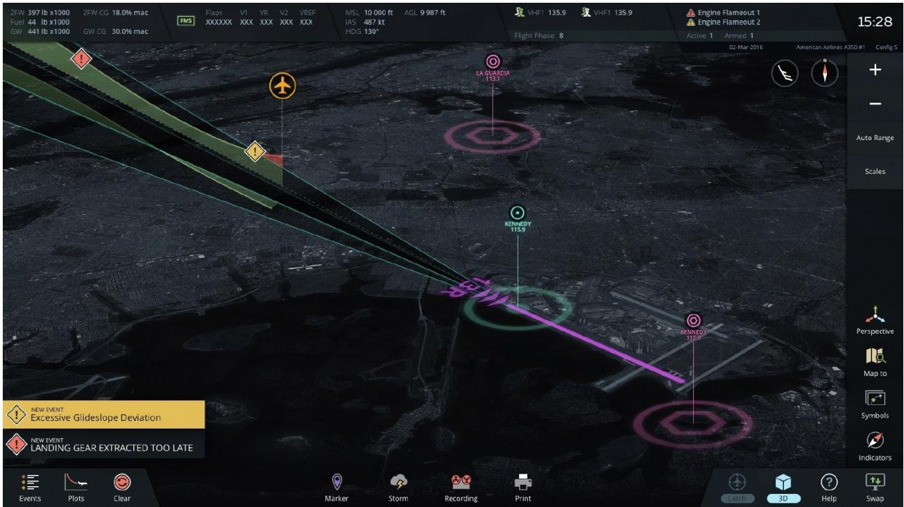
二、核心功能详解
2.1 地图标题栏（Map Header）
地图标题栏位于页面顶部，通过一系列选项卡分组显示与飞机相关的各类信息。教员可以快速监控训练中的关键参数。
| 选项卡/信息组 | 内容说明 |
|---|---|
| 重量与平衡 Weight & Balance | 显示当前飞机重量与重心相关参数（同 8.10 重量与平衡滑动面板） |
| 性能数据 Performance Data | 显示起飞/进近性能数据，如 Stab Trim、Flaps、V1/VR/V2/VREF 等 |
| 高度、航向、指示空速 Altitude / Heading / IAS | 显示飞机当前高度、航向和指示空速 |
| 通信 Communications | 显示无线电通信状态和频率信息 |
| 已激活和待处理的故障 Armed & Active Malfunctions | 显示当前预位或已激活的故障列表 |
| 当前时间 Current Time | 显示模拟器当前时间 |
| 课程与练习信息 Lesson & Exercise Info | 显示当前课程计划和训练阶段信息 |
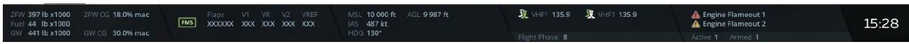
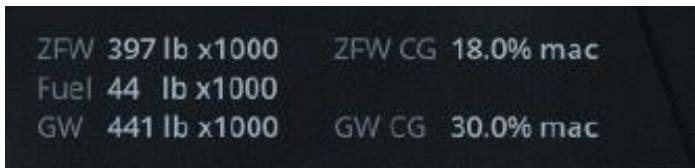
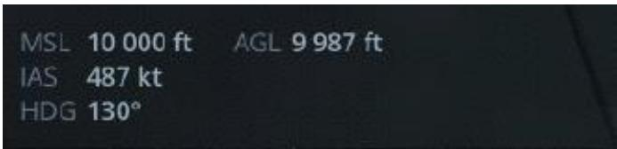
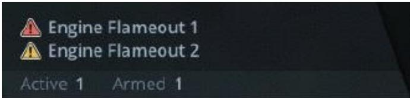
2.2 主区域（Main Section）
主区域是虚拟空间的 2D/3D 表示，显示飞机位置、飞行路径及环境组件（其他活动实体、导航台、机场、风暴等天气要素）。
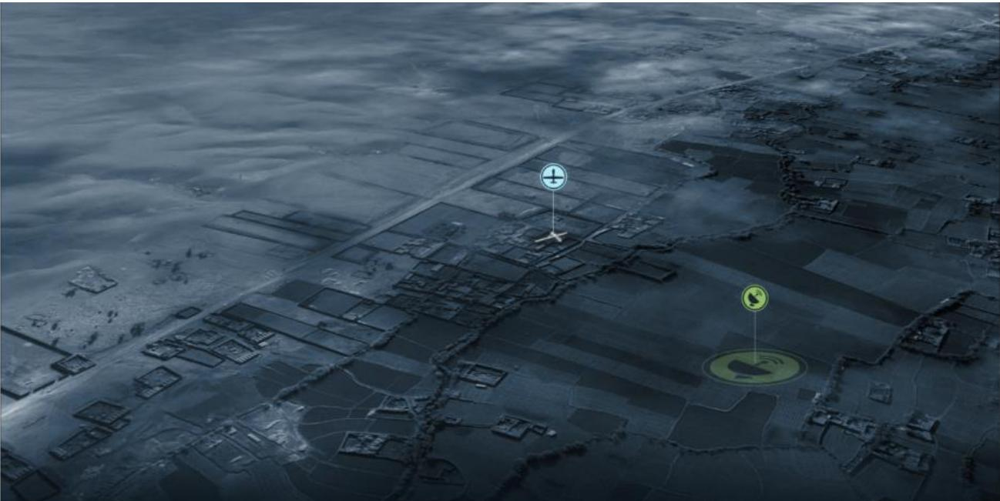
2.2.1 图标（Icons）
| 图标 | 功能 | 交互说明 |
|---|---|---|
| 风向标 Wind Barb | 指示飞机所在位置的风向 | 只读显示，随环境风参数实时更新 |
| 罗盘 Compass | 显示罗盘方向 | 点击罗盘图标可在「北向上（North Up）」与「航向向上（Heading Up）」之间切换 |
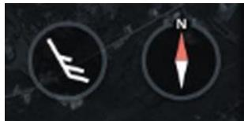
2.2.2 径向菜单（Radial Menus）
主界面上使用多种径向菜单，可通过点击地图主界面区域或特定对象访问。
光标径向菜单（Cursor Radial Menu）
点击地图空白处允许教员执行以下操作：
- 在光标位置放置一个蜘蛛网（Spider Web）
- 将飞机重新定位到地图上的特定位置
- 在地图上的特定位置添加风暴
- 在地图上的特定位置添加实体
操作步骤：点击地图区域上的所需位置 → 光标放置于点击位置 → 光标径向菜单按钮显示。
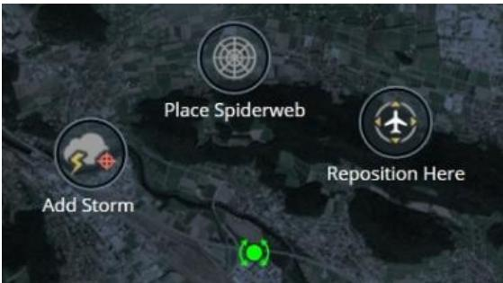
飞机径向菜单（Aircraft Radial Menu）
点击飞机允许教员在飞机周围放置一个蜘蛛网。
操作步骤：在地图主界面上点击飞机 → 点击「附加蜘蛛网（Attach Spiderweb）」按钮 → 飞机周围显示蜘蛛网。
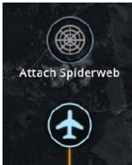
导航台径向菜单（Navaid Radial Menu）
点击导航台图标允许教员执行以下操作：
- 将飞机重新定位到导航台上方，同时保持其高度和航向，并显示故障导航台
- 对于 VOR-DME 等多组件导航台，可以仅使一个系统失效
- 重置故障导航台：当故障激活时，「故障导航台」按钮变为「重置导航台」；地图上的导航台图标指示其正常或故障状态
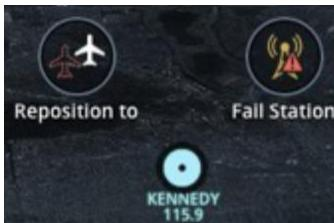
机场径向菜单（Airport Radial Menu）
点击机场图标允许教员在机场周围放置一个蜘蛛网。
风暴径向菜单（Storm Radial Menu）
点击风暴图标允许教员执行以下操作：
- 激活一个风暴
- 删除一个活跃的风暴
- 编辑/更改风暴参数或属性
- 在钩子位置添加一个风暴
2.2.2 径向菜单操作流程（Radial Menu Flow）
2.3 右侧工具栏（Right Toolbar）
右侧工具栏控制地图主界面上显示的信息，位于主区域右侧。
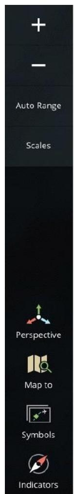
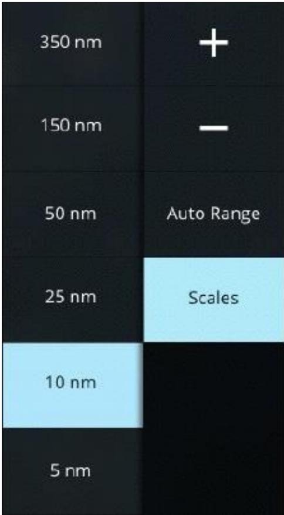
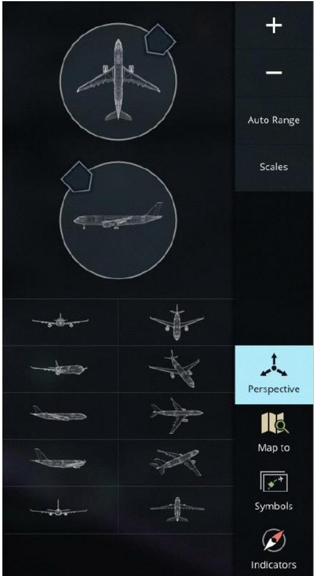
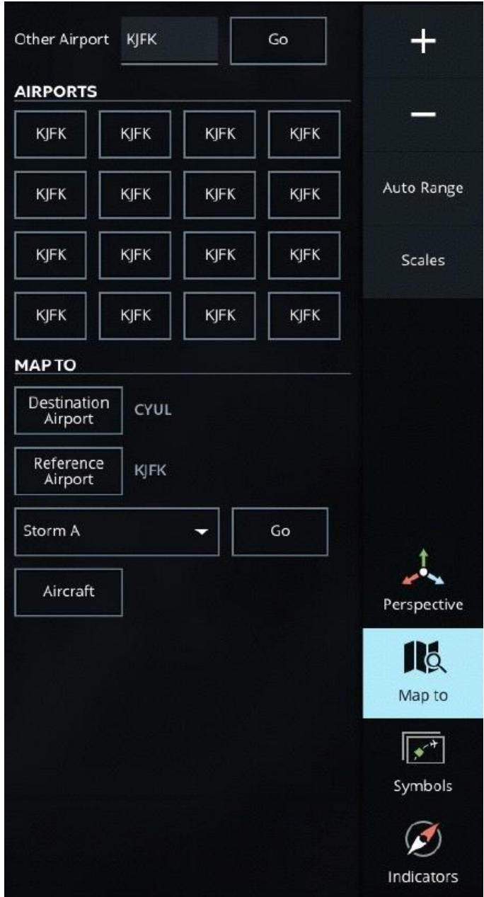
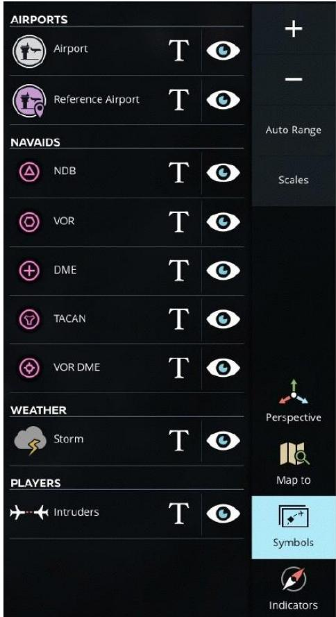
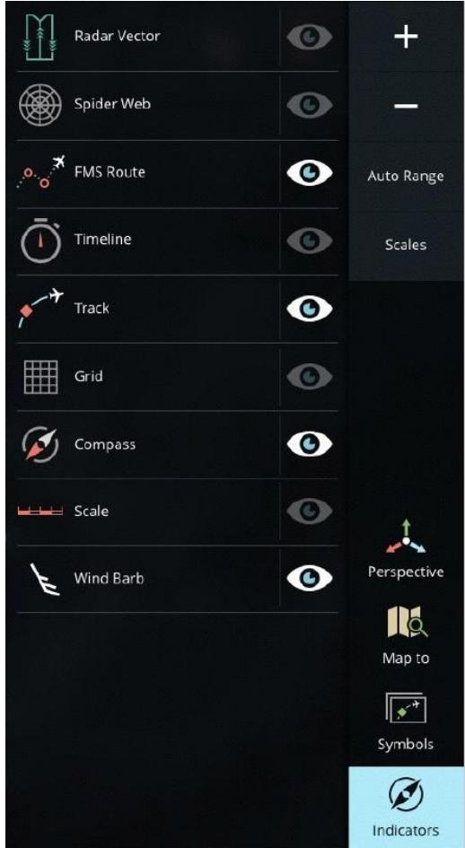
| 功能 | 交互方式 | 详细说明 / 边界行为 | 与其他功能关系 |
|---|---|---|---|
| 缩放 +/- Zoom +/- |
点击 + 或 - 按钮 | 逐级放大或缩小地图视图 | 与自动范围、地图定位联动影响当前视图；缩放级别变化会同步反馈到地图状态 API |
| 自动范围 Auto Range |
点击按钮 | 确保飞机和参考跑道始终同时显示在地图上；若未设置参考跑道，则仅围绕本机保持居中 | 中依赖：需要参考机场中已设置参考跑道；无参考跑道时退化为围绕本机居中 |
| 比例尺 Scales |
点击按钮后选择 | 地图比例尺范围 5 海里 ~ 350 海里；范围表示显示器 x 轴方向的距离（ nautical miles ） | 与缩放 +/-互为等效入口，两者修改同一视图比例参数 |
| 透视 Perspective |
点击按钮 | 将地图切换为三维模式；提供多种飞机视角，并配有两个带光标的拨盘用于交互式调整视角 | 与右侧页脚2D/3D 切换联动：两者控制同一显示模式状态，切换即时同步 |
| 地图定位 Map To |
点击按钮后选择元素 | 将地图中心定位到所选元素（机场、飞机、风暴） | 强依赖：依赖主区域中已渲染的机场、飞机、风暴实体；若目标不存在则定位选项不可用 |
| 符号 Symbols |
点击按钮后切换可见性图标 |
declutter（去杂）功能：通过两种图标分别控制符号的文本与实体显示： • T 图标：显示 / 隐藏该符号的文本标签 • 眼睛图标：显示 / 隐藏该符号本身 可控符号包括：Airports（机场）、Navaids（导航台）、Storms（风暴）、Players（入侵者） |
与主区域渲染层联动：切换可见性直接控制对应符号图层的显示/隐藏 |
| 指示器 Indicators |
点击按钮后切换眼睛可见性图标 |
declutter（去杂）功能：点击眼睛图标可显示 / 隐藏对应的指示器或工具。可控项目包括： • Spider web（蜘蛛网） • FMS route（FMS 航线） • Timeline（时间线） • Track（航迹） • Compass（罗盘） • Scale（比例尺） • Wind barb（风向标 / 风羽） |
与主区域对应覆盖层联动；罗盘与风向标的状态同时受环境系统实时数据驱动 |
2.3.1 地图视图控制流程（Map View Control Flow）
2.4 地图页脚（Map Footer）
地图页脚位于页面底部，分为左、中、右三段控件。
2.4.1 左侧页脚（Left Side Footer）
左侧页脚提供关于学员表现的补充信息（如图表），包括事件、绘图、清除三个切换/卷起菜单。
事件（Events）
「事件」切换菜单显示/隐藏系统识别的超限和异常情况信息。
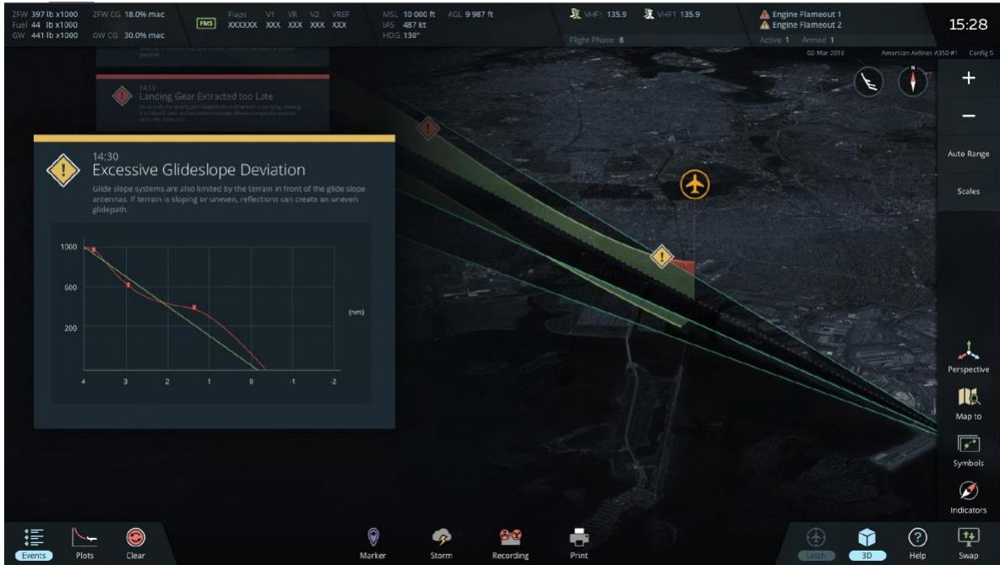
绘图（Plots）
「绘图」卷起菜单显示以下五类图表，用于在地图上叠加显示并评估机组表现。教员选择对应类型后，系统会在主区域地图上渲染其关联图表。
| 图表类型 | 评估目的 | 包含的具体指标 / 图表 |
|---|---|---|
| 精密进近 Precision Approach |
通过监控飞机在三个精密进近图表上的实际位置，评估机组进近表现 |
• Glide Path Deviation（下滑道偏差） • Localizer Deviation（航向道偏差） • Speed Deviation（速度偏差） |
| 非精密进近 Non-Precision Approach |
通过监控飞机在三个非精密进近图表上的实际位置，评估机组进近表现 |
• Height Above Terrain (HAT) vs Distance to Touchdown（HAT 与距接地点距离） • Center Line Deviation（中心线偏差） • Speed Deviation（速度偏差） |
| 起飞 Takeoff |
通过监控飞机在三个起飞图表上的实际位置，评估机组起飞表现 |
• Height Above Terrain (HAT) vs Distance to Takeoff（HAT 与距起飞点距离） • Center Line Deviation（中心线偏差） • Speed Deviation（速度偏差） |
| 尾部间隙 Tail Clearance |
通过监控五个关键参数，评估尾部间隙以避免尾部擦地（Tail Strike） |
• Airspeed（空速） • Radar Altitude（雷达高度） • Tail Clearance (inches)（尾部间隙，单位：英寸） • Pitch Attitude（俯仰姿态） • Pitch Rate（俯仰速率） |
| 跑道 Runway |
通过监控飞机在跑道上的实际位置，评估机组跑道运行表现 | 飞机在跑道上的实际位置（Runway Position） |
清除绘图（Clear Plots）
点击「清除绘图」按钮可立即清除当前地图上显示的所有图表，恢复主区域地图的纯净视图。
范围（海里）Range (nm)
「范围（海里）」滑块用于调整图表在地图上的显示比例尺。向右拖动增大范围，向左拖动缩小范围，以便教员根据训练需求灵活查看图表细节或整体趋势。
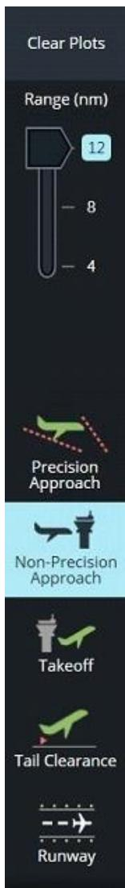
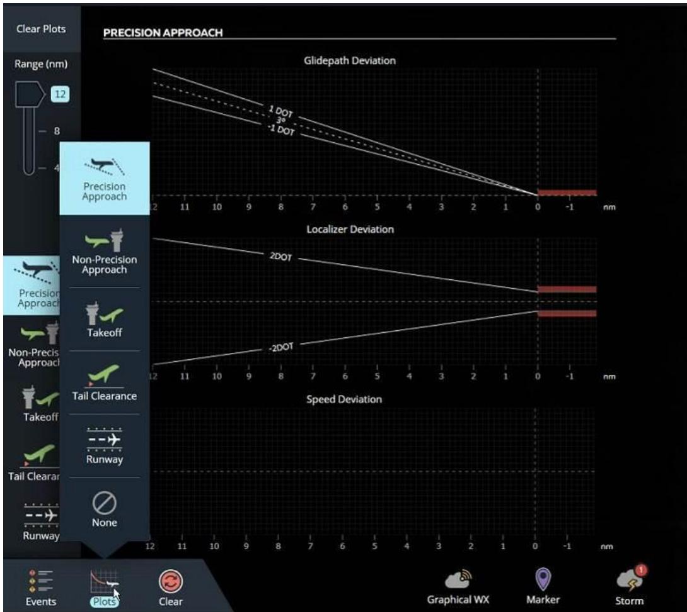
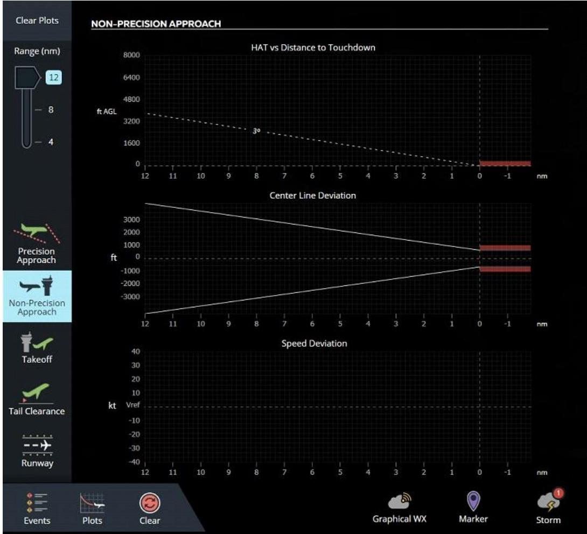
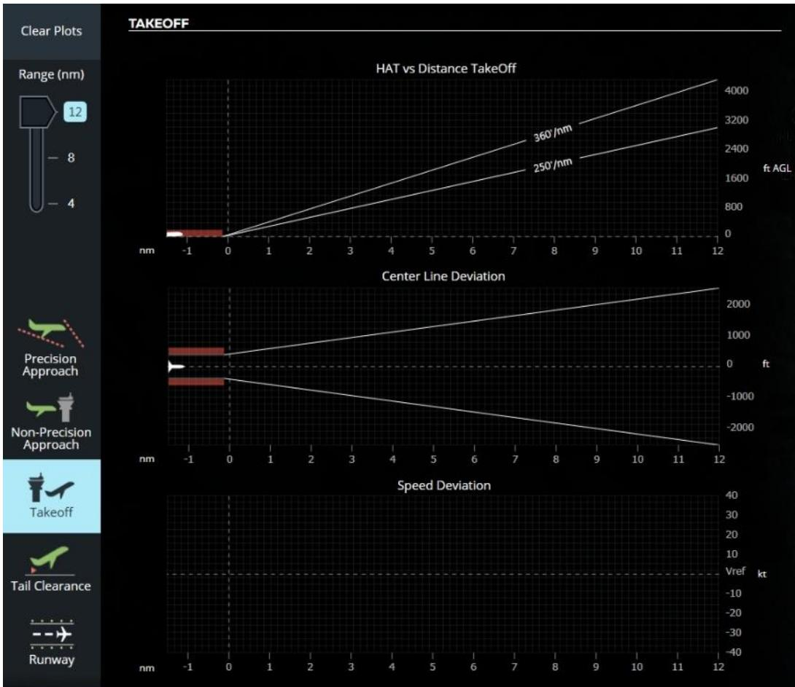
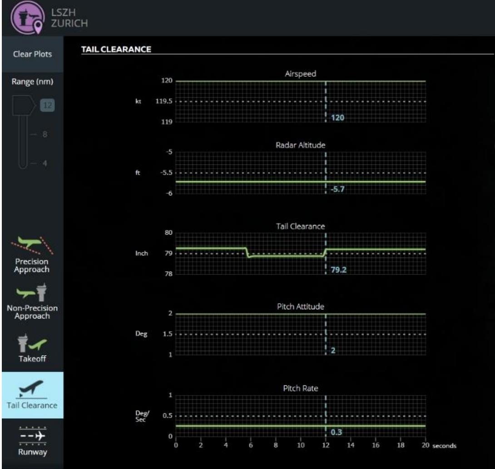
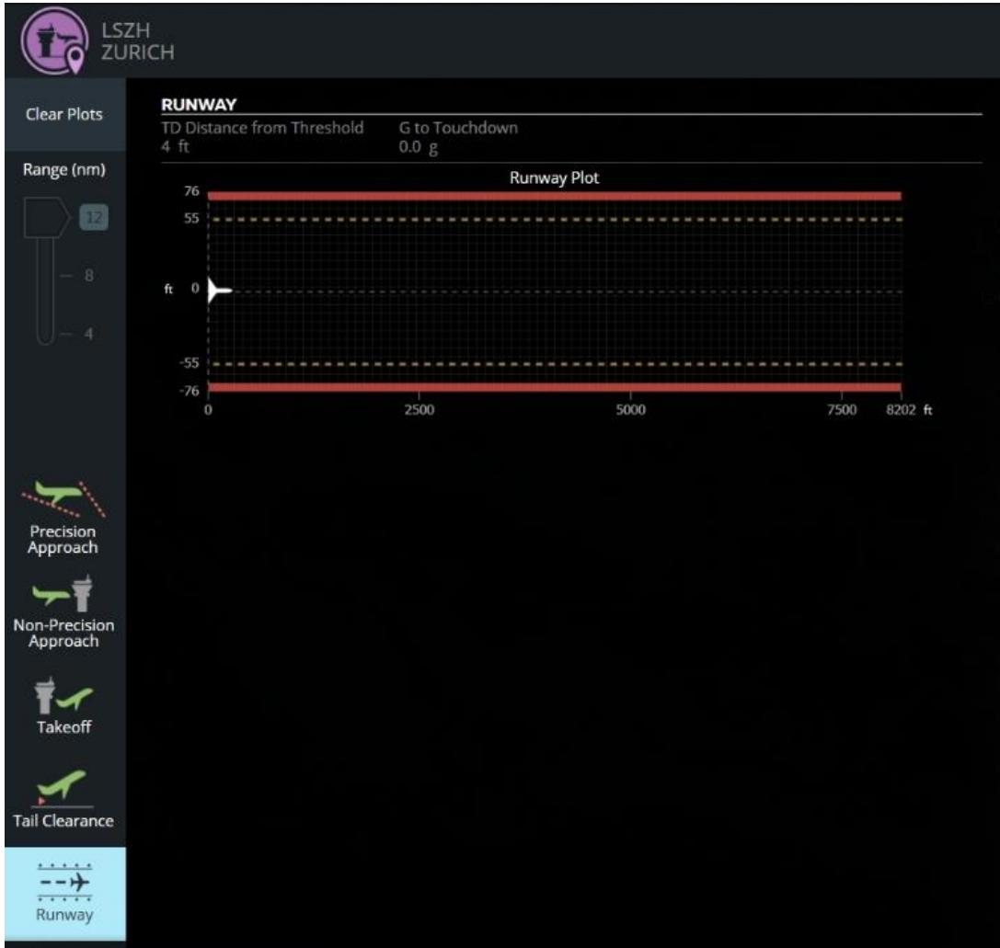
2.4.1.1 绘图显示流程（Plots Display Flow）
清除（Clear）
「清除」卷起菜单可清除虚拟环境中的项目，包括：时间线、风暴、事件列表、航迹。
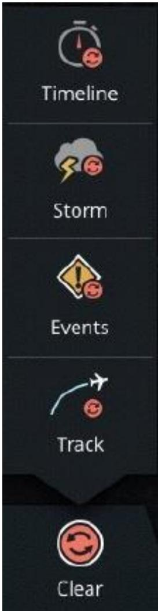
2.4.2 中间页脚（Middle Footer）
中间页脚允许用户添加事件标记、添加和编辑模拟中的风暴、录制训练课程，以及打印当前页面或其他页面。包含标记、风暴、录制、打印四个按钮。
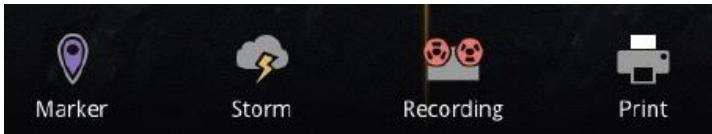
标记（Marker）
点击「标记」按钮显示标记卷起菜单。该菜单包含各种类型的彩色标记，可用于在飞机飞行路径上以及训练课程视频录制中标记事件，便于后续讲评时快速定位特定片段。
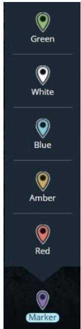
2.4.2.1 标记操作流程（Marker Flow）
风暴（Storm）与风暴属性滑动面板
点击中间页脚「风暴」按钮显示风暴属性滑动面板（STORM PROPERTIES Sliding Panel）。该面板允许教员在地图环境中添加多种类型的风暴、旋转所选风暴以及为所选风暴添加各种效果。面板包含以下三个主要区域：
- 风暴列表（List of Storms）：显示模拟中已激活或未激活的风暴
- 类型（TYPE）：显示所有可插入模拟的风暴类型
- 旋转与效果（ROTATION & EFFECTS）：选择风暴类型后显示，提供编辑风暴所需的全部控制项
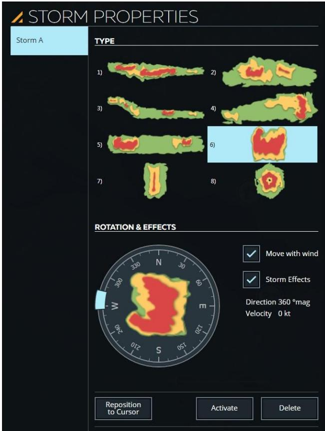
| 区域/控件 | 控件类型 | 功能说明 |
|---|---|---|
| 风暴列表 | 列表区域 | 显示模拟中已激活或未激活的风暴列表；激活的风暴由红色「激活（ACTIVE）」标志指示；选中后可修改风暴属性 |
| 类型（TYPE） | 选项区域 | 显示所有可插入模拟的风暴类型；选中后高亮为浅蓝色，并在地图环境中以浅灰色显示（尚未在模拟中激活） |
| 旋转与效果（ROTATION & EFFECTS） | 编辑区域 | 选择风暴类型后立即显示，集中提供旋转风暴、添加效果、重新定位等编辑所需的全部控制项 |
| 风暴旋转图 | 交互式拨盘 | 浅蓝色光标允许教员在 0~360 度之间旋转风暴；触摸并按住光标在刻度盘上移动即可旋转 |
| 重新定位到光标 | 按钮 | 将所选风暴的中心重新定位到地图上的光标位置 |
| 随风移动 | 复选框 | 使所选风暴根据当前风环境参数移动 |
| 风暴效果 | 复选框 | 在视觉场景中激活闪电效果（仅在风暴物理边界内显示） |
| 激活 | 按钮 | 激活所选风暴；激活后地图上浅灰色显示的风暴将变为彩色 |
| 删除 | 按钮 | 从地图上移除所选风暴 |
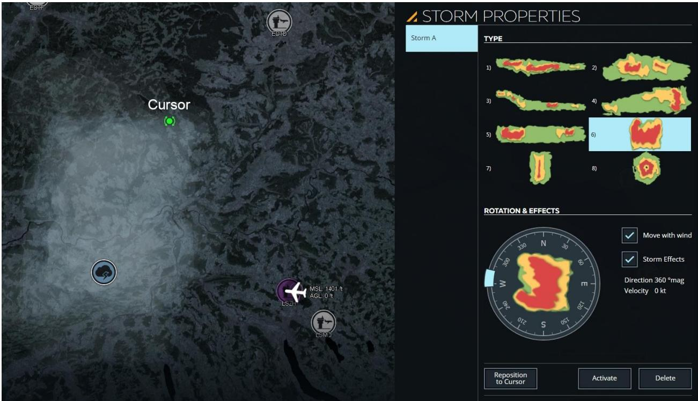
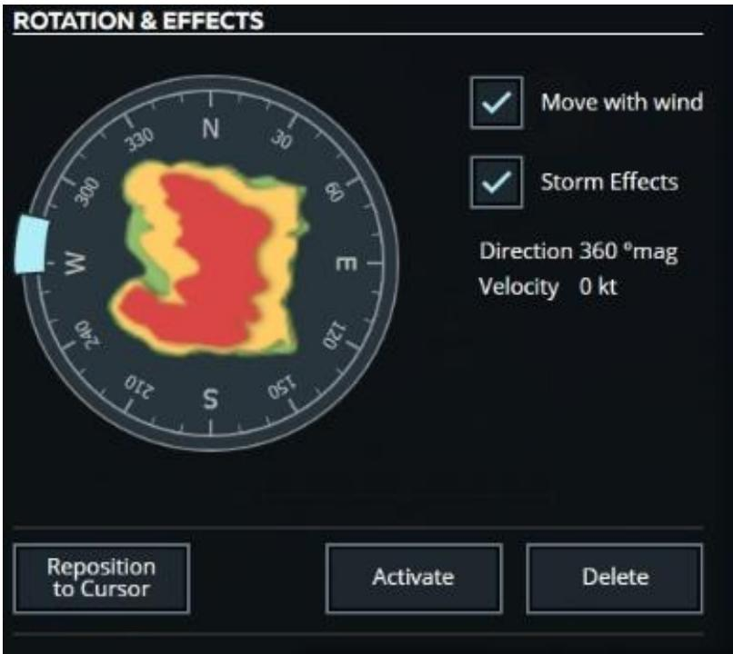
添加风暴的两种方式：
方式一：通过光标径向菜单
- 在地图主界面上点击目标位置，放置光标。
- 在光标径向菜单中点击「添加风暴（Add Storm）」图标，弹出风暴属性滑动面板。
- 在「类型（TYPE）」区域中点击选择所需的风暴类型，所选风暴将被放置在地图上的光标位置。
- 编辑风暴属性（旋转、效果、位置等）。
- 点击「激活（Activate）」按钮，在光标位置激活风暴。
- 所选风暴旁边出现红色「激活（ACTIVE）」标志，表示该风暴已在模拟中激活。
- 中间页脚「风暴」按钮上覆盖红色徽章，指示当前已激活的风暴数量。
方式二：通过风暴按钮
- 点击中间页脚「风暴」按钮，弹出风暴属性滑动面板。
- 在「类型（TYPE）」区域中点击选择所需的风暴类型，所选风暴将被放置在飞机前方约 20 海里处。
- 编辑风暴属性（旋转、效果、位置等）。
- 点击「激活（Activate）」按钮激活风暴。
- 所选风暴旁边出现红色「激活（ACTIVE）」标志，表示该风暴已在模拟中激活。
- 中间页脚「风暴」按钮上覆盖红色徽章，指示当前已激活的风暴数量。
状态提示：所选风暴旁边的红色「激活（ACTIVE）」标志表示该风暴在模拟中已激活；中间页脚「风暴」按钮上覆盖的红色徽章表示当前已激活的风暴数量。
录制（Recording）
录制按钮是开始/停止切换按钮，用于控制训练课程的视频录制。仅在配备简报/讲评系统的 IOS 设备上可用。
录制按钮状态：
- 准备录制 / 按下开始录制
- 录制中 / 按下停止录制
在训练课程视频录制期间，可使用地图页脚中的事件标记来标识课程中的特殊事件，便于事后回顾和评估机组资源管理（CRM）。
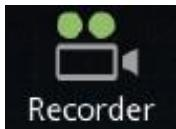
打印（Print）
打印按钮的功能与控制板页脚上的打印按钮相同（详见 1.2.7 控制面板底部）。
2.4.3 右侧页脚（Right Side Footer）
右侧页脚包含锁定、2D/3D、帮助、工作区四个按钮。
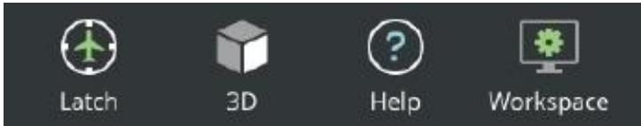
| 按钮 | 功能定义 | 交互方式 / 边界行为 | 与其他功能关系 |
|---|---|---|---|
| 锁定 Latch |
将地图锁定到本机，使本机始终保持在地图中央 | 点击切换锁定/解锁状态；锁定后地图自动跟随飞机位置平移，缩放级别保持不变 | 与自动范围互斥：锁定本机时自动范围逻辑暂停；与地图定位切换使用时互相覆盖当前中心点 |
| 2D/3D | 在主区域 2D 和 3D 显示模式之间切换 | 点击即时切换；3D 模式下可通过右侧工具栏「透视」拨盘调整视角 | 与右侧工具栏透视（Perspective）联动：两者共享同一显示模式状态，从 2D 切到 3D 后透视拨盘才生效 |
| 帮助 Help |
打开帮助说明 | 点击弹出帮助面板；行为与 1.2.7 控制面板底部帮助按钮一致 | 复用：功能与入口同 1.2.7 控制面板底部，详见该章节 |
| 工作区 Workspace |
切换 IOS 工作区 | 点击弹出工作区选择面板，选择后离开当前地图工作区；当前地图状态在会话中保留 | 复用：功能与入口同 1.2.7 控制面板底部；切换工作区时会触发 IOS 工作区管理器的上下文切换 API |
2.5 风暴管理子流程（Storm Management Flow）
风暴属性滑动面板涉及「选择 → 编辑 → 激活/删除」的多步骤操作，按规范要求绘制独立的横向操作流程图。
光标位置/飞机前20NM] Place --> Edit[编辑属性
旋转/随风移动/风暴效果] Edit --> Decide{操作决策} Decide -->|激活| Activate[点击激活
浅灰变彩色] Decide -->|删除| Delete[点击删除
从地图移除] Decide -->|重新定位| Reposition[重新定位到光标] Activate --> End([风暴激活完成]) Delete --> End2([风暴移除完成]) Reposition --> Edit style Start fill:#dbeafe,stroke:#2563eb,stroke-width:2px style End fill:#d1fae5,stroke:#059669,stroke-width:2px style End2 fill:#d1fae5,stroke:#059669,stroke-width:2px style Activate fill:#d1fae5,stroke:#059669,stroke-width:2px style Delete fill:#fee2e2,stroke:#dc2626,stroke-width:2px
三、全局操作流程与推导
3.1 地图工作区教员核心操作流程全景图
重量与平衡 /
性能数据 /
高度航向空速 /
通信 /
故障 /
时间课程信息] Decision -->|主区域交互| Main[操作 Main Section
风向标 & 罗盘 /
5 种径向菜单] Decision -->|控制地图视图| Toolbar[使用 Right Toolbar
缩放 / 自动范围 /
比例尺 / 透视 /
地图定位 / 符号 /
指示器] Decision -->|左侧页脚| LeftF[左侧页脚操作
Events / Plots /
Clear] Decision -->|中间页脚| MidF[中间页脚操作
Marker / Storm /
Recording / Print] Decision -->|右侧页脚| RightF[右侧页脚操作
Latch / 2D3D /
Help / Workspace] Header --> End([操作完成]) Main --> End Toolbar --> End LeftF --> End MidF --> StormSub[风暴管理子流程
选择类型 → 编辑属性 → 激活 / 删除] StormSub --> End RightF --> End style Start fill:#dbeafe,stroke:#2563eb,stroke-width:2px style End fill:#d1fae5,stroke:#059669,stroke-width:2px style StormSub fill:#fef3c7,stroke:#d97706,stroke-width:2px
流程说明：地图工作区教员核心操作流程展示了教员进入地图工作区后的单次完整操作动线。流程以「进入 Map Workspace」为起点，教员首先选择操作域，完成对应操作后直接汇聚到「操作完成」终点。
教员可从以下六大操作域中选择：
- 标题栏监控：查看飞机重量与平衡、性能数据、高度/航向/空速、通信状态、故障列表、当前时间以及课程与练习信息，快速掌握训练中的关键参数。所有信息均为实时监控，无需额外操作即可获取。
- 主区域交互：查看风向标（实时风向）和罗盘（支持 North Up / Heading Up 切换），或通过 5 种径向菜单执行具体操作：
• 光标径向菜单：放置蜘蛛网、飞机重定位、添加风暴/实体
• 飞机径向菜单：在飞机周围放置蜘蛛网
• 导航台径向菜单：飞机重定位至导航台上方、故障/重置导航台
• 机场径向菜单：在机场周围放置蜘蛛网
• 风暴径向菜单：激活、删除、编辑风暴参数或添加至钩子位置 - 控制地图视图：使用右侧工具栏调整地图显示，包括缩放（+/-）、自动范围（确保飞机与参考跑道同屏）、比例尺（5 ~ 350 nm）、透视（3D 模式 + 双拨盘调整视角）、地图定位（中心定位至机场/飞机/风暴）、符号（T 图标控制文本标签 / 眼睛图标控制元素显示）以及指示器（眼睛图标控制蜘蛛网、FMS 航线、时间线、航迹、罗盘、比例尺、风羽的显示/隐藏）。
- 左侧页脚：查看 Events（系统识别的超限和异常信息）、Plots（5 类性能评估图表：精密进近、非精密进近、起飞、尾部间隙、跑道）或使用 Clear 清除时间线、风暴、事件列表和航迹。
- 中间页脚：使用 Marker 在飞行路径上标记彩色事件；通过 Storm 打开风暴属性面板执行「选择类型 → 编辑属性（旋转/效果/位置） → 激活/删除」的子流程；控制 Recording 开始/停止录制（需配备简报/讲评系统）；或使用 Print 打印当前页面。
- 右侧页脚：使用 Latch 将地图锁定到本机保持居中；切换 2D/3D 显示模式；打开 Help 获取帮助；Workspace 按钮可切换至其他 IOS 工作区并结束当前地图会话。
六个操作域最终均汇聚至「操作完成」终点；若教员通过右侧页脚 Workspace 切换至其他 IOS 工作区，则视为结束当前地图会话。如需执行下一项任务，教员可重新从 Map Workspace 入口启动新流程。
3.2 地图工作区通用状态机
状态说明
| 状态 | 说明 |
|---|---|
| 地图未加载 | 当前未显示地图工作区，处于其他 IOS 工作区 |
| 地图显示中 | 地图工作区已加载，教员可进行各类操作 |
| 信息监控中 | 教员正在查看标题栏的飞机/性能/故障/通信信息 |
| 地图浏览中 | 教员正在缩放、平移、切换 2D/3D 或调整视角 |
| 风暴面板打开中 | 风暴属性滑动面板已打开，等待选择风暴类型 |
| 风暴编辑中 | 已选择风暴，正在编辑旋转、效果、位置等属性 |
| 风暴激活中 | 点击激活后，风暴从浅灰色变为彩色并生效 |
| 绘图显示中 | 左侧页脚选择了某类图表并在地图上显示 |
| 录制中 | 训练课程视频录制正在进行，最长 300 秒 |
| 录制暂停中 | 录制因点击停止或飞行冻结而暂停 |
3.3 关联依赖与异常边界
3.3.1 关联依赖
| 关联项 | 依赖关系 |
|---|---|
| Control Board Footer / 控制面板底部 | 强依赖：地图工作区通过页脚 Workspace 按钮进入 |
| Weather / 天气系统 | 强依赖：风暴的显示和移动依赖当前环境风参数 |
| Reference Airport / 参考机场 | 中依赖：自动范围功能需要参考跑道位置；地图定位支持机场元素 |
| Flight Freeze / 飞行冻结 | 中依赖：飞行冻结会暂停录制模式；风暴效果仍可在冻结状态下显示 |
| Brief/Debrief System / 简报讲评系统 | 弱依赖：录制按钮和事件标记仅在配备该系统的 IOS 设备上可用 |
3.3.2 异常边界
| 场景 | 行为 |
|---|---|
| 未配备简报/讲评系统 | 录制按钮不可用或被隐藏；事件标记功能受限 |
| 风暴已选中但未激活 | 地图上的风暴显示为浅灰色，未对模拟环境产生实际影响 |
| 飞行冻结激活时启动录制 | 录制模式被暂停，解冻后可继续 |
| 录制达到最大时长 300 秒 | 自动停止录制，需重新开始新的录制片段 |
| 自动范围开启但无参考跑道 | 自动范围逻辑可能仅围绕本机保持居中，具体行为取决于 IOS 配置 |
| 点击罗盘切换 North Up / Heading Up | 切换即时生效，不影响地图缩放级别或中心点 |
3.4 数据流与开发流程推导
3.4.1 数据流
教员点击 Workspace → 选择 Map
↓
IOS 工作区管理器加载地图工作区上下文
↓
渲染地图标题栏（从飞机/环境/课程状态订阅）
↓
渲染主区域（2D/3D 地图引擎加载地形、飞机位置、导航台、机场、风暴）
↓
右侧工具栏与地图页脚渲染完成
↓
教员操作触发 UI 事件 → 地图引擎更新视图 → 模拟器状态同步（如风暴激活、飞机重新定位）
3.4.2 API 接口契约建议
| 接口 | 方法 | 请求/响应 | 说明 |
|---|---|---|---|
| 切换工作区 | POST /api/v1/workspace/switch | { workspace: "map" } / { success, currentWorkspace } | 切换到地图工作区 |
| 获取地图状态 | GET /api/v1/map/state | { center, zoom, mode, locked, overlays[] } | 获取当前地图中心、缩放、2D/3D 模式、锁定状态 |
| 设置地图视图 | POST /api/v1/map/view | { center?, zoom?, mode?, locked? } | 更新地图中心、缩放级别、2D/3D 模式、锁定状态 |
| 获取风暴列表 | GET /api/v1/map/storms | [{ id, type, position, rotation, active, effects }] | 获取地图上所有风暴状态 |
| 创建/更新风暴 | POST /api/v1/map/storms | { id?, type, position, rotation, moveWithWind, effects, active } | 创建或更新风暴属性 |
| 删除风暴 | DELETE /api/v1/map/storms/:id | { success } | 从地图和模拟中移除风暴 |
| 控制录制 | POST /api/v1/recording/control | { action: "start" | "stop" | "pause" } | 控制训练课程视频录制；受简报/讲评系统配置限制 |
| 添加事件标记 | POST /api/v1/recording/markers | { type, timestamp, position } | 在录制时间轴上添加事件标记 |
四、测试要点
| 测试类型 | 测试场景 | 期望结果 |
|---|---|---|
| 正向路径 | 从控制面板点击 Workspace → 选择 Map | 成功切换到地图工作区，标题栏、主区域、工具栏、页脚全部加载 |
| 正向路径 | 点击罗盘图标切换 North Up / Heading Up | 地图方向即时切换，飞机/地图相对关系正确 |
| 正向路径 | 通过光标径向菜单添加并激活风暴 | 风暴放置于光标位置，激活后从浅灰变为彩色，模拟环境生效 |
| 正向路径 | 通过风暴按钮添加风暴 | 风暴放置于飞机前方约 20 海里处，属性面板可正常编辑 |
| 正向路径 | 选择左侧页脚「精密进近」绘图 | 地图上显示下滑道/航向道/速度偏差图表，数据与飞机实际位置一致 |
| 异常路径 | 未配备简报/讲评系统时访问录制按钮 | 录制按钮隐藏或禁用，事件标记功能不可用 |
| 异常路径 | 飞行冻结期间点击开始录制 | 录制进入暂停状态，解冻后自动恢复或需手动恢复（按配置） |
| 边界条件 | 连续录制达到 300 秒上限 | 录制自动停止，系统提示达到最大时长 |
| 边界条件 | 比例尺在 5~350 海里范围边界切换 | 最小/最大缩放级别限制正确，不越界 |
| 联动测试 | 修改环境风参数时观察风向标和风暴移动 | 风向标方向更新；已勾选「随风移动」的风暴位置按风向风速漂移 |
| 性能测试 | 同时激活多个风暴并切换 2D/3D 模式 | 地图渲染帧率稳定，无卡顿或内存泄漏 |
五、变更记录
| 日期 | 版本 | 变更内容 |
|---|---|---|
| 2026-06-05 | V1.0 | 初始生成 1.6 地图工作区 HTML，完整覆盖地图标题栏、主区域（图标/径向菜单）、右侧工具栏（7 项功能）、地图页脚（左/中/右三段）；包含风暴属性滑动面板详述、子流程图、状态机、测试要点；配套原始手册 Figure 111~143 共 35 张截图 |
| 2026-06-08 | V1.1 | 规范审查修正：1）1.1 功能层级图按规范拆分为 Main / Popups 两个 subgraph；2）3.1 全局操作流程图由循环图重构为单主干 + 统一 End 汇聚；3）2.5 子流程标题补全英文 Flow 名并修正 End2 颜色；4）补全 2.3 / 2.4.3 属性表格的「与其他功能关系」列；5）补充 2.2.2 机场与风暴径向菜单的操作步骤；6）更新图片默认显示宽度与 overlay 滚轮缩放/拖拽平移交互 |